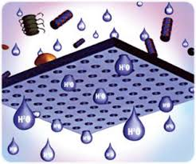
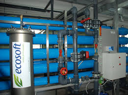
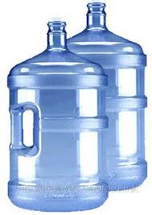

Доставка здоровой питьевой воды домой и в офис
Заказать воду
(095) 363 82 70
(067) 705 93 70
(0552) 39 56 05
(067) 705 93 70
(0552) 39 56 05

«Чиста вода» – это бутилированная питьевая вода, которая по своим характеристикам и методу очистки отвечает самым высоким критериям качества.
Добывается из артезианской скважины и проходит дополнительную очистку на сертифицированном оборудовании на заводе-производителе.
«Чиста вода» проходит внутренний контроль качества в собственной лаборатории на производстве и регулярный контроль Херсонского центра стандартизации и метрологии на:
Продукция и производство полностью сертифицированы, сертификат предъявляем по необходимости в момент доставки.
На нашем заводе установлено 7 уровней доочистки воды.
Основным этапом очистки воды является современная технология - система обратного осмоса.  Система обратного осмоса — это продавливание воды под высоким давлением (до 20 атм.) через полупроницаемую мембрану (диаметр отверстий мембраны равен диаметру молекулы воды, а именно 0,0002 мкм) с целью удалить из воды растворенные вещества, органику, коллоидные частицы и бактерии. Обратный осмос способен удалить 95% общего количества растворенных веществ и 99% всех бактерий и вирусов. Таким образом, обеспечивается максимальная безопасность и чистота воды.
Стоит также отметить, что питьевую воду, доочищеную по технологию обратного осмоса используют при производстве: детского питания, розлива соков, пива, различных медицинских препаратов, спиртных напитков.
Обеззараживание воды происходит с помощью ультрафиолетовых ламп.
Ультрафиолетовая лампа уничтожает бактерии и вирусы, не изменяя при этом физико-химический состав воды, а, следовательно, и вкуса воды.
Для розлива воды «Чиста вода» используется современная автоматизированная линия. Вода разливается в поликарбонатные бутыли (искусственное стекло). Данный материал сохраняет природные свойства воды и обеспечивает длительное и безопасное ее хранение.
До розлива воды в тару, бутыли проходят очистку автоматизированной системой мойки и ополаскиваются.
Далее бутыли поступают на линию розлива очищенной питьевой воды. Сразу после розлива бутыль автоматически закупоривается пробкой, наносится дата розлива, после чего на горлышко надевается термоколпачок для защиты подлинности.
Далее продукция поступает в службу доставки, чтобы доставить ее к Вам домой или на работу.